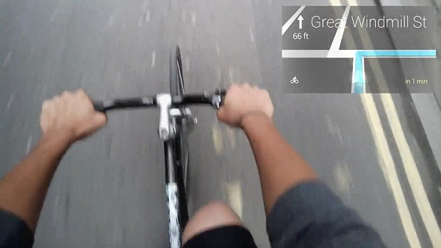
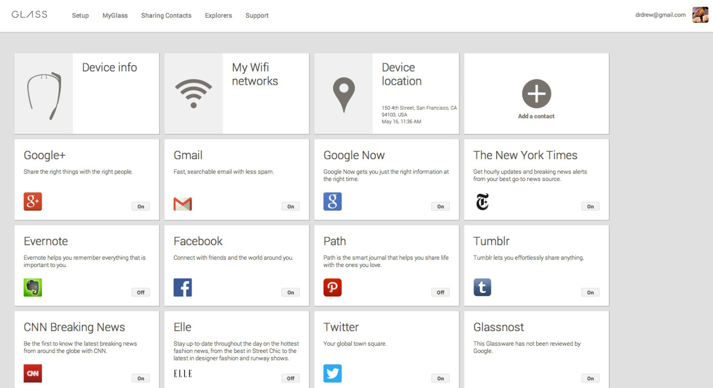
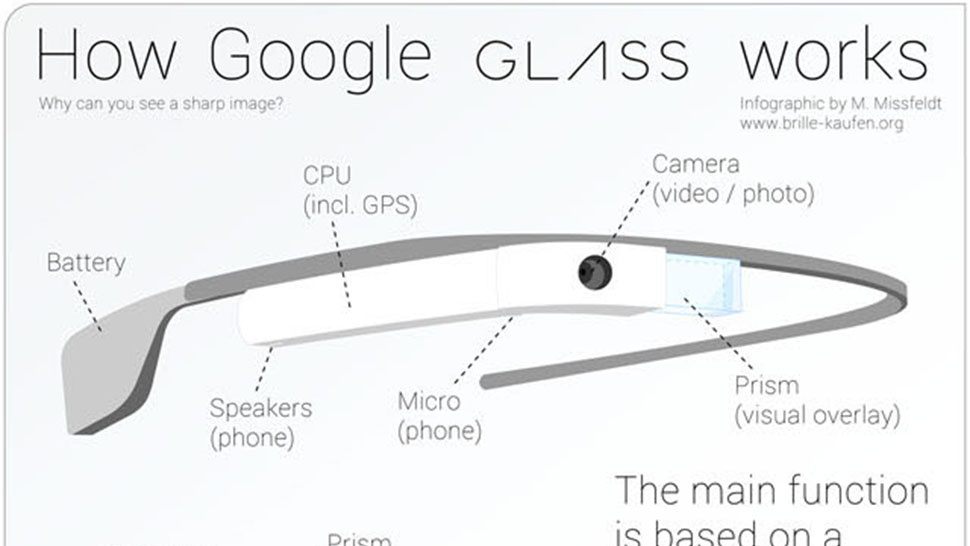
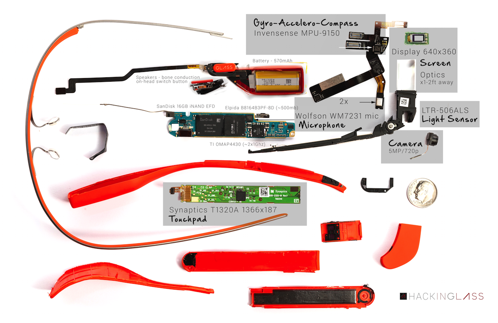
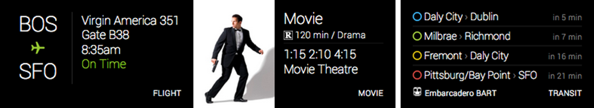
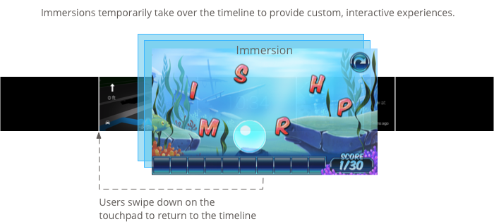
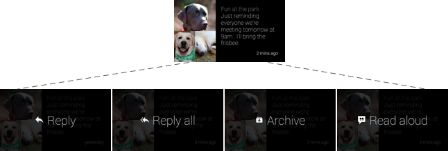
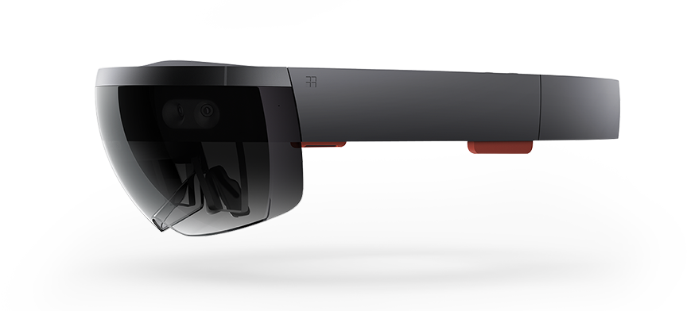
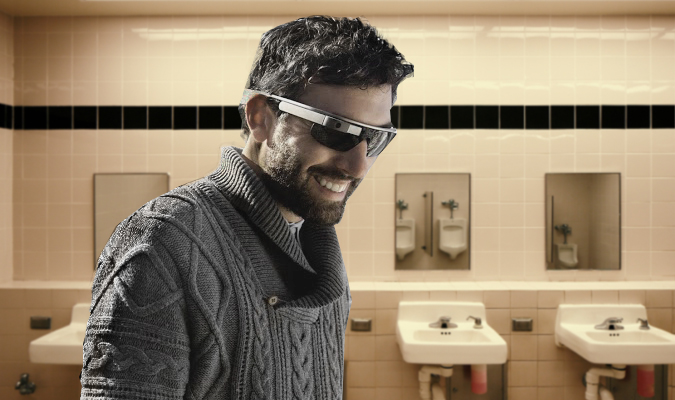
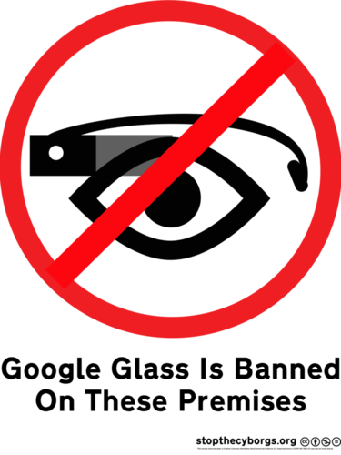

A Brief History
• It was developed by Google X, the first prototype (mid-2011) weighted 8 pounds. Then it was publicly announced in April 2012.
• Google started selling a prototype of Google Glass to qualified Glass Explorers in the US in April 2013, and they made it available to the public in May 2014.
• In January 2015, Google announced that it would stop producing the Google Glass prototype but remained committed to the development of the product. It graduated from Google [X] Labs, from Google's point of view.
How was it being introduced?
Nothing is better than having skydivers jumping off a plane at your developer conference wearing the new product.
Consumer Use Cases
• Share the moment, including videos and photos.
• Overlay information in front of your eye.
Consumer Use Cases
• Replacement for instruction manuals (e.g. Ikea)
• Real-time language translation.
• Overcoming disabilities
Google Glass at Work
• Record video during surgeries for record or for education purposes;
• Family doctor hands free when treating patient.
• Hotel, airline and other servicing industries.
Google Glass at Work
• Nepal Government adopted Google Glass for tackling poachers of wild animals and herbs of their international parks.
• Warehouse picking, receiving, access to inventory and order information
Apps
Popular apps include: Google Now, Twitter, CNN, duoLingo, Facebook, Word Lens, Evernote, IFTTT and NYT.
Basic Structure
Detail Technical Spec
• Android 4.4.2, 640x360 LCoS display, Touchpad, 5MP Camera, 720p Video Recording, WiFi 802.11b/g, Bluetooth, 16GB, 2GB RAM, TI OMAP 4430 ARMv7 1.2GHz Dual, 3 axis Gyroscope, 3 axis Accelerometer, 3 axis Magnetometer (compass), Ambient Sensor, Bone Conduction Audio
• Google's Glass Development Kit (GDK) and Mirror API are made available to developers.
Teardown
User Interface Concepts
Concepts include Timeline View, Static Cards, Live Cards, Immersion, Menu Items etc.
  Personal Review
The Good
• Cutting edge design and integrate with technologies for its display, sensors, size and weight
• Hands free features!
• Lighter than other VR headsets in the market today
The Bad
• Battery life is poor
• Wink to take photo is creepy
• The price, both the Glass and frame
Other Products
EyeTap, Microsoft HoloLens, Oculus Rift, Sixth Sense, Samsung Gear VR (Oculus), and more.
Some of these are designed for full feature at home experience, both entertainment and gaming.
Don't do this!
 Resources
Google Glass for Developers, Design for Glass, Google Glass G+, Google Glass Teardown, Astro Teller: Here's what we did wrong with Google Glass
Credit
• Impress.js
• Various image source (references embedded in html)
Use a spacebar or arrow keys to navigate